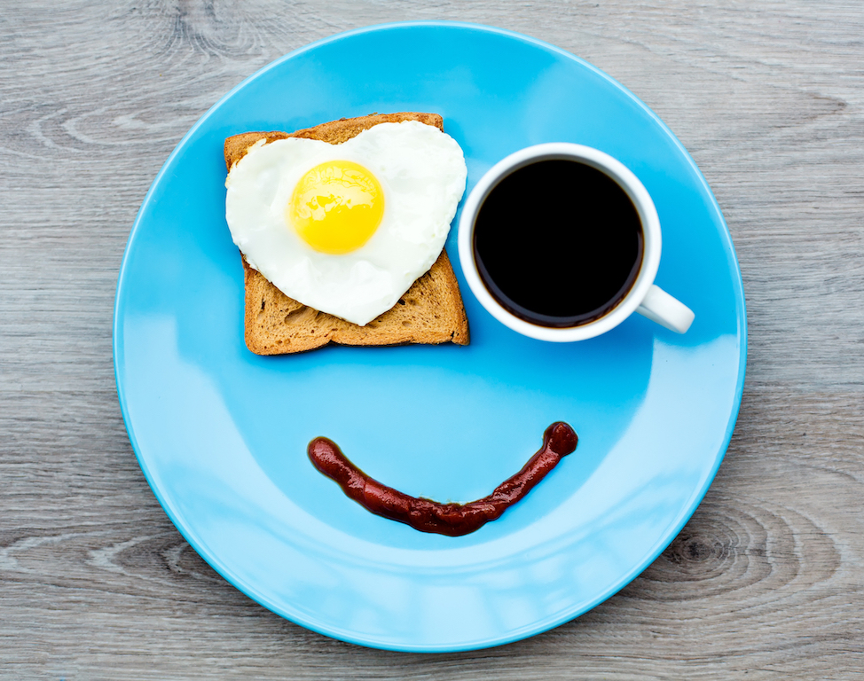

The Most Important Meal of the Day

Original image
Learning to code is hard work, make sure you fuel up first thing in the morning with a hearty breakfast!
How often does your morning routine look a little something like this?
- Alarm goes off, hit snooze
- 10 minutes later... hit snooze again
- 10 minutes later... grudgingly refuse to hit snooze a third time, crawl slowly out of bed
- Stumble into shower
- Get dressed, look at clock
- Agh! You're late for work! *You promise yourself you won't hit snooze tomorrow*
- Run out the door
The blessing/curse of the snooze button gave you 20 more blissful minutes of sleep, but robbed you of time to eat breakfast. Now your stomach is rumbling on the way to work, and you're grasping for enough energy to begin the day.
Making time for breakfast, even just a quick one, is super important to your well-being and overall productivity. Here are some ideas for a quick snack to eat in the morning:
- English muffin with peanut butter
- Banana and yogurt
- Breakfast burrito
- Oatmeal
Happy eating!